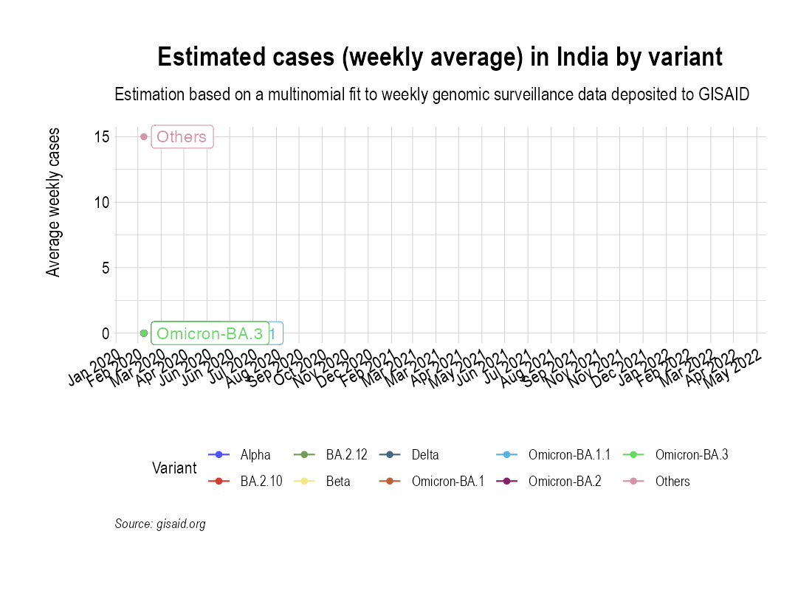

Animation of projected weekly cases - India
Source:vignettes/VariantAnimation-India.Rmd
VariantAnimation-India.RmdGet variants data for India
gisaid_metadata <- qs::qread("~/github/2021_Covid19_surveillance/data/all_metadata/metadata_tsv_2022_05_03.qs")
gisaid_india <- FilterGISAIDIndia(gisaid_metadata_all = gisaid_metadata)
vocs <- GetVOCs()
omicron <- vocs[["omicron"]]
vocs[["omicron"]] <- NULL
custom_voc_mapping <- list(
`BA.1.1` = "BA.1.1",
`BA.1` = "BA.1",
`BA.2` = "BA.2",
`BA.2.1` = "BA.2.1",
`BA.2.10` = "BA.2.10",
`BA.2.10.1` = "BA.2.10.1",
`BA.2.12` = "BA.2.12",
`BA.2.12.1` = "BA.2.12.1",
`BA.3` = "BA.3",
`BA.4` = "BA.4",
`BA.5` = "BA.5"
)
gisaid_india <- gisaid_india %>% filter(pangolin_lineage != "None")
gisaid_india <- CollapseLineageToVOCs(
variant_df = gisaid_india,
vocs = vocs,
custom_voc_mapping = custom_voc_mapping,
summarize = FALSE
)Get weekly cases for India
confirmed_subset_dateweekwise_long <- GetIndiaConfirmedCasesWeeklyLong()
confirmed_subset_dateweekwise_long_india <- confirmed_subset_dateweekwise_long %>%
filter(State == "India") %>%
rename(n = value) %>%
rename(WeekYearCollected = WeekYear) %>%
dplyr::select(-contains("type"))
confirmed_subset_dateweekwise_long_india$State <- NULL
gisaid_india_weekwise <- SummarizeVariantsWeekwise(gisaid_india)Project weekly cases to variant prevalence data from GISAID
voc_to_keep <- gisaid_india_weekwise %>%
group_by(lineage_collapsed) %>%
summarise(n_sum = sum(n)) %>%
filter(n_sum > 50) %>%
pull(lineage_collapsed) %>%
unique()
gisaid_india_weekwise <- gisaid_india_weekwise %>% filter(lineage_collapsed %in% voc_to_keep)
india_cases_pred_prob_sel_long <- FitMultinomWeekly(gisaid_india_weekwise, confirmed_subset_dateweekwise_long_india)## # weights: 44 (30 variable)
## initial value 412713.744878
## iter 10 value 178245.778153
## iter 20 value 156178.424542
## iter 30 value 131833.455017
## iter 40 value 131345.510406
## iter 50 value 130883.197513
## iter 60 value 130523.770906
## iter 70 value 130477.400720
## iter 80 value 130453.538705
## iter 90 value 130350.447579
## iter 100 value 130205.017476
## iter 110 value 129638.432912
## iter 120 value 129442.262575
## iter 130 value 129327.539417
## iter 140 value 129321.792586
## iter 150 value 129304.839867
## iter 160 value 129292.985465
## iter 170 value 129236.937257
## iter 180 value 129194.254763
## final value 129193.981242
## converged
the_anim <- PlotVariantPrevalenceAnimated(india_cases_pred_prob_sel_long, title = "Estimated cases (weekly average) in India by variant", caption = "**Source: gisaid.org and covid19bharat.org**")
the_anim